Isomerism. Polymerism. Part 2
Description
This section is from the book "Modern Chemistry", by William Ramsay. Also available from Amazon: Modern Chemistry: Theoretical and Modern Chemistry (Volume 2).
Isomerism. Polymerism. Part 2
The new gas is called ethane. It, too, exists in only-one modification, and it is legitimate to suppose that the atoms of hydrogen are symmetrically arranged with reference to the two atoms of carbon.
Like methane, it can be attacked by chlorine with similar results ; the equation is : C2H6 + CL = C2H5Cl + HCl. And here again only one chlorethane, C2H5Cl, is known ; another argument in favour of symmetry.
If a mixture of chloromethane and chlorethane, dissolved in ether, be treated with sodium, a third " hydrocarbon " is formed, possessing the formula C3Hg; it is named propane. Its formation may be expressed thus :
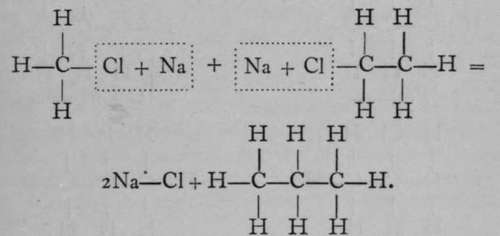Again, only one propane is known. But if it is exposed to the action of chlorine, two monochloropropanes are formed, each of which has the empirical formula C3H7Cl. The chlorine atom in each isomer may be replaced by the hydroxyl group, —OH ; the resulting products, C3H7OH, are termed propyl and isopropyl alcohols. It is possible to reconvert each of these compounds into its respective chloropropane ; and it is also possible to obtain from them, by oxidation, very different products. Propyl alcohol, when oxidised by boiling with a solution of chromic acid, a compound which easily loses oxygen, is converted first into propionic aldehyde, C3H6O ; but on continued oxidation the aldehyde is changed to propionic acid, C3H6O2. On the other hand, isopropyl alcohol is oxidised by similar treatment to a compound called acetone, possessing the same empirical formula as propionic aldehyde, viz., CgH6O, but differing entirely from the latter in properties ; and if the process of oxidation be continued, the acetone is broken up into acetic acid and carbon dioxide, both simpler compounds, containing fewer atoms of carbon than acetone. These changes are easily represented by the following formulae, which are termed graphic, or structural, or constitutional, inasmuch as they represent to some extent the structure of each molecule.
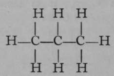Propane.
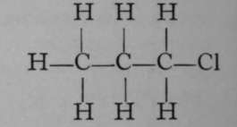Chloropropane.
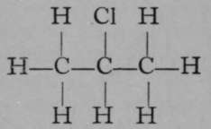Isochloropropane.
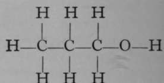Propyl Alcohol.
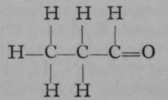Propionic Aldehyde.
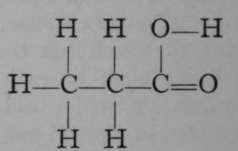Propionic Acid.
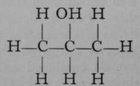Isopropyl Alcohol.
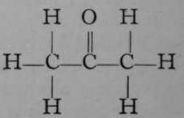Acetone.
It is evident that while propane itself is a symmetrical substance, inasmuch as all the atoms of hydrogen are symmetrically arranged as regards the three atoms of carbon, as soon as an atom of hydrogen is replaced by an atom of chlorine, two possibilities are open ; the atom of chlorine may attach itself either to one of the end atoms of carbon, or to the middle one. In each case a different compound is produced ; and this is shown not only by the different boiling-points of the two chloro-compounds, but also by their behaviour with reagents.
The relation of propane to ethane may be conceived to be due to the replacement of an atom of hydrogen in the latter by the group — CH3, which is termed the methyl group. Ethane may be viewed as methyl-methane, H3C—CH3, and propane may also be regarded as dimethyl-methane, H3C—CH2—CH3, the central group —CH2—being taken as the methane molecule, of which two atoms of hydrogen have been replaced by two methyl groups. If the structural formula of propane be again inspected, it is evident that two butanes must be possible— one, a methyl-propane; the other, a trimethyl-methane, thus:—
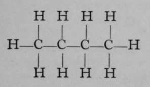Methyl- Propane.
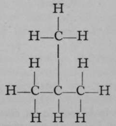Trimethyl- Methane.
These two butanes may yield similar derivatives. It is evident on inspection that the first will furnish two mono-chlorobutanes, according as an atom of chlorine replaces one of hydrogen of either of the two end atoms of carbon ; the other, if the chlorine atom is attached to either of the middle atoms of carbon. And the second butane can also yield two chlorobutanes, according as a chlorine atom replaces hydrogen of one of the three — CH3 groups, or hydrogen of the ^CH group.
Such forms of isomerism are very common, and instances might be multiplied indefinitely.
Another form of isomerism arises when an element such as nitrogen, which has more than one valency, is contained in the molecule. The atom of nitrogen can be made to occupy one of two positions as regards an atom of carbon. A common instance of this is the isomerism of the nitrlles and the carbamlnes. A nitrile is a compound in which an atom of nitrogen replaces three atoms of hydrogen, all of which were attached to the same atom of carbon. Thus, from ethane, C2H6, acetonitrile is derived thus :—
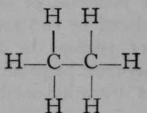Ethane.
Continue to: